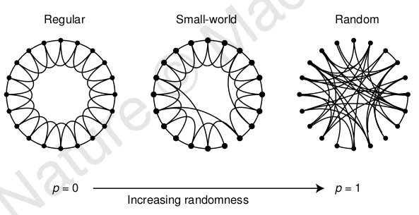
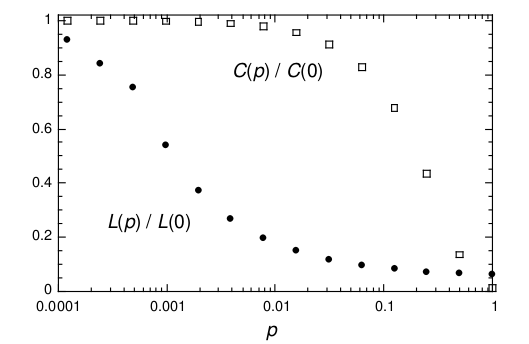

Small-World Network
What is Small-World Network?
A network is said to be a small-world network if its mean shortest path between any pair of nodes grows logarithmically with the size of nodes.
Mathematically, a network G with n nodes is a small-world network if its average distance L satisfies:
L∝log(n).
Small-world properties are found in many real-world phenomena. For example, an letter delivering experiment had be conducted to find out that there are no more than about 6 steps between each pair of people in the world which is known as six degrees separation.
Erdős–Rényi (ER) model
ER model is a simple model for generating random graphs. To generate a random graph given n nodes, each possible edge is selected with a probability p. This generating mechanism is known as G(n,p). A popular variant of ER model is G(n,M) which select exactly M edges from edge set of uniform distribution.
It has been proved that if p≫ln(n)n then a graph generated by model G(n,p) will almost surely be connected. Purely random graphs exhibit small-world property along with a small clustering coefficient which is not consistent with small-world networks in real world whose clustering coefficient is high.
Watts-Strogatz Model
Watts-Strogatz model was proposed to generate small-world networks with small-world property and also with high clustering coefficient. To acheive this goal, Watts-Strogatz model imploy a different random graph generating mechanism G(n,k,p) that starts from a regluar graph with n nodes and k degrees and rewires each edge with a probability p. Graphs generated with p=1 have no difference from random graphs generated by G(n,nk/2). To guarantee that a random graph will be connected, k≫ln(n) is required. Regular graphs G(n,k,p=0) are large-world networks whose average distance L∝n but have high clustering coefficent C. In constrast, random graphs G(n,k,p=1) are poorly clustered, small-world networks whose average distance L∝log(n).
However, Watts and Strogatz found out that, compared to G(n,k,p=0), L drops dramatically and C changes a little with a small rewiring probability p. In this way, a small-world network with high clustering coefficient can be attained. Figure 1 shows the relationships between regular graphs, small-world network and random graphs and Figure 2 shows how L and C change with rewiring probability p.
Under Watts-Strogatz model, given an actual network G with n nodes and m edges and a random graph G(n,m), small-world property in the acutal network can be identified if
Lactual≈Lrandom∧Cactual≫Crandom


Figure 2. p's effections on L and C.
Scale-Free Model